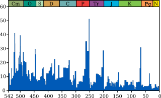

Grafikten Veri Cikartmak
Bazen mesela grafiksel gördüğümüz bir zaman serisinin verisi elde olmayabilir. Veriyi grafikten çıkartmak için, örneğe bakalım
Veriyi sayısal olarak çıkartmak için imaj işleme (image processing) metotlarını kullanabiliriz. Mesela bir metot yanyana iki pikselin farkını hesaplar, eğer fark büyükse orada bir "kenar" vardır. Bu teknikle yukarıdaki imajdaki eğri bulunabilir.
Ana imaj
https://en.wikipedia.org/wiki/File:Extinction_intensity.svg
PGM'e cevirelim
convert -crop 495x245+29+54 -resize 900x400 Extinction_intensity.svg extinct.pgm
Imaj isleme kodu
import pandas as pd
from PIL import Image
im2=Image.open("extinct.pgm")
grady,gradx = np.gradient(im2)
grady = (grady>0).astype(float)
extin = np.argmax(grady,axis=0)
df = pd.DataFrame(extin)
df2 = df.max()-df
mymin = 1.
mymax = 52. - mymin
df3 = df2 / df2.max() * mymax
df3 = df3 + mymin
idx = np.linspace(542,1,len(df3))
df4 = df3.set_index(idx)
df4[0].to_csv('extinct.csv',header=None,index=None)
ext = pd.DataFrame(pd.read_csv('extinct.csv',header=None))
ext = ext.set_index(np.linspace(542,1,len(ext)))
ext[0].plot()
ext = ext[0]
plt.savefig('ex1.png')
